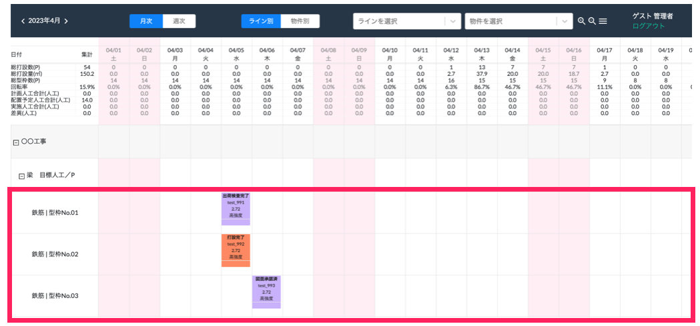
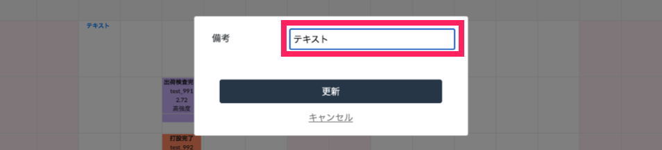
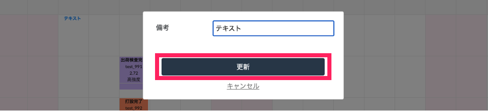
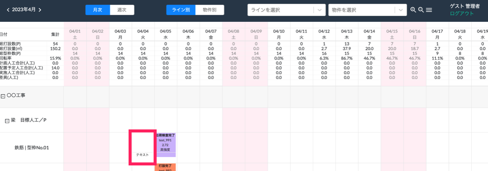

Skip to main content
Link
Menu
Expand
(external link)
Copy
Copied
PC製造管理システム操作マニュアル
製造管理システム概要
iPadセットアップ手順
従業員の登録
従業員区分登録
従業員登録
製品マスタの登録
事前設定
物件マスタ設定
製造ラインステータス設定
製品情報の変更
製品マスタをexcelからインポート
項目内容の更新（再インポート）
製品マスタ画面他機能
工程管理
事前設定
製品登録(情報追加)
物件登録(情報追加)
休日設定マスタ
機能
WEB工程表へのアクセス
選択日のみ日付を移動
選択日と以降の日付を移動
型枠の調整
項目での表示の並べ替え
表示する期間の変更
表示する項目の絞り込み
表示の拡大縮小
色付け対象の選択
折りたたみ機能
ステータスの変更
備考の記入
出荷の記入
品質管理
事前設定
製品登録
通知マスタ
図面属性マスタ
分類マスタ
機能：管理者向け
工程のテンプレート作成
工程の各項目詳細
作業フローを作成
製品のQRコードを印刷
製品のラベルを印刷
製品の図面を登録
製品の図面を印刷
各製品の状況を確認
工程の指示書を登録
工程の状況を確認
製品を廃版にする
機能：作業者向け
チェックリストを表示
製品詳細画面
製品の品質チェック
図面に手描きする
出荷管理
事前設定
製品登録
運送業者登録
物件登録(情報追加)
機能：製造会社向け
荷姿票各項目詳細
荷姿票を作成
荷姿票を複製
荷姿票、受領書、納品書の印刷
機能：運送会社向け
WEB出荷管理システムにログイン
車両、運転手マスタの登録
荷姿票に[運転手]、[運転手電話番号]、[車番]を登録
コンクリート品質管理
事前設定
コンクリート強度マスタの登録
コンクリート強度の表示設定
製品登録
休日マスタ設定
機能
画面表示
フレッシュコンクリート検査
脱型強度検査
出荷強度検査
品質基準強度検査
調合管理強度検査
写真登録（iPad）
登録済の写真取込
再検査（脱型、出荷）
CSV出力
更新履歴
工程管理
機能
備考の記入
備考の記入
コメントを書きたい日付の型枠番号行をクリックします。

「備考」の項目に任意のコメントを入力します。

「更新」をクリックします。

WEB工程表に入力したコメントが表示されます。
